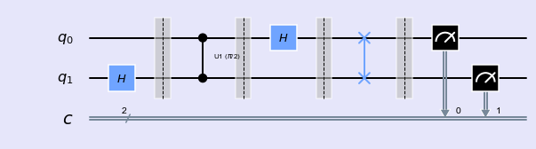
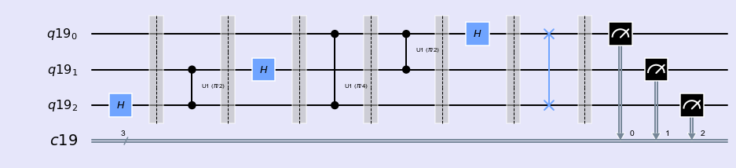
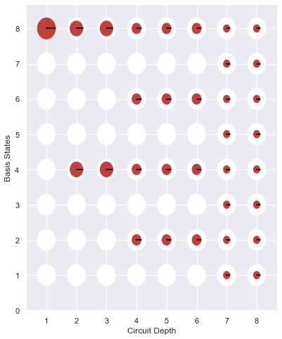
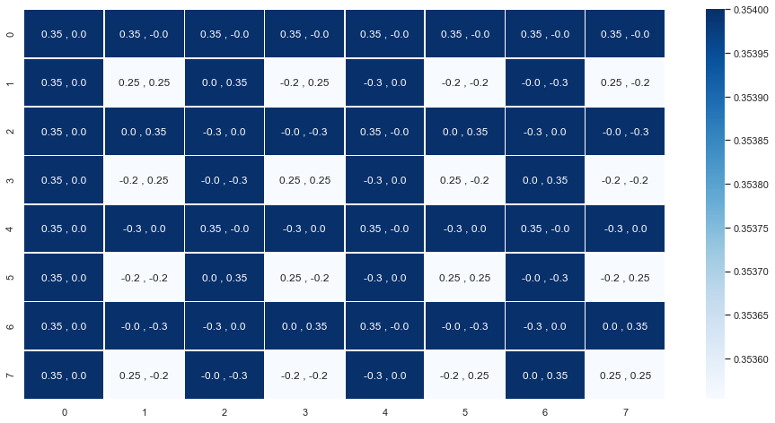

Quantum Fourier Transform
%matplotlib inline import numpy as np import IPython import matplotlib.pyplot as plt from qiskit import QuantumCircuit,ClassicalRegister,QuantumRegister from qiskit import BasicAer from qiskit.tools.jupyter import * from qiskit.visualization import * import seaborn as sns sns.set()
from helper import *
QFT is defined as
$$ QFT:|x> = \frac{1}{\sqrt{N}}\sum_{k=0}^{N-1} \omega_{x}^{k}|k>$$
where \( \omega_{x}^{k} \) is \( N^{th} (N = 2^{n} \) ) root of unity: \( e^{\frac{2\pi i}{2^{n}}} \).
$$ QFT: F_{N} = \frac{1}{\sqrt{N}} \left( \begin{array}{cccccc} 1 & 1 & 1 & 1 & \cdots & 1 \\ 1 & \omega_{n} & \omega_{n}^{2} & \omega_{n}^{3} & \cdots & \omega_{n} ^{N-1}\\ 1 & \omega_{n}^{2} & \omega_{n}^{4} & \omega_{n}^{6} & \cdots & \omega_{n} ^{2(N-1)}\\ 1 & \omega_{n}^{3} & \omega_{n}^{6} & \omega_{n}^{9} & \cdots & \omega_{n} ^{3(N-1)}\\ \vdots & \vdots & \vdots & \vdots & \dots & \vdots \\ 1 & \omega_{n}^{(N-1)} & \omega_{n}^{2(N-1)} & \omega_{n}^{3(N-1)} & \cdots & \omega_{n} ^{(N-1((N-1)}\\ \end{array}\right )$$
QFT ( 1 qubit)
For single qubit circuit ( \( n = 1, N = 2^{1} = 2)\)
$$\omega_n = e^{\frac{2\pi i}{2^{n}}} = -1$$.
$$QFT_1 = \frac{1}{\sqrt{2}} \left( \begin{array}{cc} 1 & 1 \\ 1 & -1\\ \end{array}\right)$$
It is very simple, QFT in single qubit id just a Hadamate operation.
QFT (2 qubits)
For two qubit circuit, ( \( n =2, N = 2^{2} = 4)\)
$$ \omega_{n} = e^{\frac{2\pi i}{2^{n}}} = i$$
$$QFT_2 = \frac{1}{{2}}\left( \begin{array}{cc} 1 & 1 & 1 & 1\\ 1 & i & -1 & -i\\ 1 & -1 & 1 & -1\\ 1 & -i & -1 & i\\ \end{array} \right) $$
Our task is to represent this matrix in terms of fundamental gate metrix.
- Circuit
def qft2(): qc = QuantumCircuit(2,2) qc.h(1) qc.barrier() qc.cu1(np.pi/2, 0, 1) qc.barrier() qc.h(0) qc.barrier() qc.swap(0,1) return qc
qc = qft2()
drawCircuit_2q(qc)

- Phase
def getPhaseSeq(): phaseDic = [] qc = QuantumCircuit(2,2) qc0 = qc.copy() qc.h(1) qc1 = qc.copy() qc.cu1(np.pi/2, 0, 1) qc2 = qc.copy() qc.h(0) qc3 = qc.copy() qc.swap(0,1) qc4 = qc.copy() for iqc in [qc0,qc1,qc2,qc3,qc4]: phaseDic.append(getPhase(iqc)) return phaseDic
drawPhase(getPhaseSeq())

- State vector as tensor product
Since this circuit consists of pure superposition brought up by hadamard gate, it is possible to obtain final state vector by taking direct product of single qubit states. Results from operation of H gate on single qubit can be multiplied with direct product operation to get final state.
$$ \frac{1}{\sqrt{2}} (|0 \rangle + | 1\rangle) \otimes \frac{1}{\sqrt{2}}(|0 \rangle + | 1\rangle) = \frac{1}{2}(|00 \rangle + |01 \rangle + |10 \rangle + |11 \rangle $$
i.e., $$\frac{1}{\sqrt{2}}\left( \begin{array}{cc} 1 \\ 1 \end{array} \right) \otimes \frac{1}{\sqrt{2}}\left( \begin{array}{cc} 1 \\ 1 \end{array} \right) = \frac{1}{2} \left( \begin{array}{cc} 1 \\ 1 \\ 1 \\ 1 \end{array} \right) $$
Where \( |00 \rangle , |01 \rangle , |10 \rangle \) and \( |11 \rangle \) are basis states for two qubit system.
-
Matrix Element
-
How to realize it the quantum circuit?
$$ I = \left( \begin{array}{cc} 1 & 0 \\ 0 & 1 \end{array} \right) ;H = \frac{1}{\sqrt{2}} \left( \begin{array}{cc} 1 & 0 \\ 0 & 1 \end{array} \right) ;$$
$$ C_{u1} =\left( \begin{array}{cc} 1 & 0 & 0 & 0\\ 0 & 1 & 0 & 0\\ 0 & 0 & 1 & 0\\ 0 & 0 & 0 & i \end{array} \right) ; SWAP =\left( \begin{array}{cc} 1 & 0 & 0 & 0\\ 0 & 0 & 1 & 0\\ 0 & 1 & 0 & 0\\ 0 & 0 & 0 & 1 \end{array} \right) $$
At first barrier: \( U_1 = I \otimes H \)
At second barrier: \( U_2 = C _{u1} \times (I \otimes H) \)
At third barrier: \( U_3 = (H \otimes I) \times C _{u1} \times (I \otimes H) \)
At fourth barrier: \( U_4 = SWAP \times (H \otimes I) \times C _{u1} \times (I \otimes H) \)
Implementing Numpy
I = np.eye(2,2) H = 1/np.sqrt(2)*np.array([[1,1],[1,-1]]) H_kron_I = np.kron(H,I) CU1 = np.array([[1,0,0,0],[0,1,0,0],[0,0,1,0],[0,0,0,0.+1.j]]) I_kron_H = np.kron(I,H) SWAP = np.array([[1,0,0,0],[0,0,1,0],[0,1,0,0],[0,0,0,1]])
U = np.dot(H_kron_I,np.dot(CU1,np.dot(I_kron_H,SWAP))) U
array([[ 0.5+0.j , 0.5+0.j , 0.5+0.j , 0.5+0.j ],
[ 0.5+0.j , 0. +0.5j, -0.5+0.j , 0. -0.5j],
[ 0.5+0.j , -0.5+0.j , 0.5+0.j , -0.5+0.j ],
[ 0.5+0.j , 0. -0.5j, -0.5+0.j , 0. +0.5j]])
ket = np.array([1,0,0,0]) np.dot(U,ket)
array([0.5+0.j, 0.5+0.j, 0.5+0.j, 0.5+0.j])
qc = qft2()
plotMatrix(qc)

QFT (3 qubits)
- Circuit Diagram
def qft3(): n = 3 q = QuantumRegister(n) c = ClassicalRegister(n) qc = QuantumCircuit(q,c) qc.h(q[2]) qc.barrier() qc.cu1(np.pi/2, q[1], q[2]) qc.barrier() qc.h(q[1]) qc.barrier() qc.cu1(np.pi/4, q[0], q[2]) qc.barrier() qc.cu1(np.pi/2, q[0], q[1]) qc.barrier() qc.h(q[0]) qc.barrier() qc.swap(q[0], q[2]) return q,c,qc
q,c,qc = qft3() qc.barrier() qc.measure(q,c) style = {'backgroundcolor': 'lavender'} qc.draw(output='mpl', style = style)

-
State vector
-
Intermediate Ket and Phases
def getPhaseSeq(): phaseDic = [] QC = [] n = 3 q = QuantumRegister(n) c = ClassicalRegister(n) qc = QuantumCircuit(q,c) qc0 = qc.copy() qc.h(q[2]) qc1 = qc.copy() qc.cu1(np.pi/2, q[1], q[2]) qc2 = qc.copy() qc.h(q[1]) qc3 = qc.copy() qc.cu1(np.pi/4, q[0], q[2]) qc4 = qc.copy() qc.cu1(np.pi/2, q[0], q[1]) qc5 = qc.copy() qc.h(q[0]) qc6 = qc.copy() qc.swap(q[0], q[2]) qc7 = qc.copy() QC = [qc0,qc1,qc2,qc3,qc4,qc5,qc6,qc7] for iqc in QC: phaseDic.append(getPhase(iqc)) return QC, phaseDic
drawPhase(phaseDic)

- Matrix Element
q,c,qc = qft3()
plotMatrix(qc)
